Cut Section
The users of VCollab Presenter can create and view cut section planes
Cut Section includes 3 steps:
- Section Plane Definition
- Coordinate plane.
- Custom plane.
- Clipping and visualization
- Users can use the Show Planes option to visualize the plane.
- Users can invert the clipping side about the section plane.
- Users can visualize the intersection lines of the model on the section plane.
- Users can visualize an offset section plane in addition to the prime section plane.
- Section Plane translation and rotation.
- Users can translate and rotate the plane in parametric axes using slider controls.
- Users can get the plane location by X, Y, Z axes intercepted with the section plane.
Section Panel
Right click in the viewer window to open the context menu. Select Cut Section
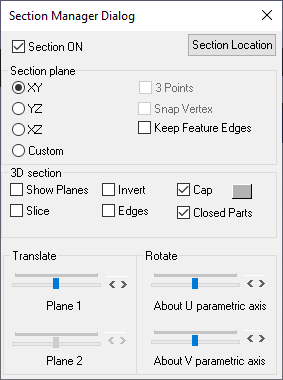
The various fields and options available in the Section manager dialog are explained below
| Section ON | Shows/Hides section plane. |
| Section Location | Displays primary cut section plane data and allows to edit and apply. |
| XY | Displays plane parallel to XY Plane |
| YZ | Displays plane parallel to YZ Plane |
| XZ | Displays plane parallel to XZ Plane |
| Custom | Enables custom options like 3 Points. |
| 3 Points | Enables mouse mode to select 3 points to define and display planes. |
| Snap Vertex | Allows users to select a vertex nearest to the mouse hit. |
| Keep Feature Edges | Allows users to skip Feature Edges from clipping. |
| Show Planes | Shows/Hides section plane. |
| Invert | Toggles in clipping sides of section plane |
| Slice | Allows users to create a secondary section plane which cuts the model on the other side. |
| Edges | Displays intersection lines of the model with the section plane. |
| Cap | This option helps to fill the hollow closed region to appear as solid. In general capping works for solid parts only (set closed part option on). If multiple open parts form a closed part then also capping will work (set closed part option off). When parts are open (holes are present in body) capping may not work properly. Section capping is not supported in OPENGL mode (OpenGL version < 1.2); |
| Translation Slider Control | Controls the translation of section planes. |
| About U parametric axes | Rotates section planes about the U parametric axis. |
| About V parametric axes | Rotates section planes about the U parametric axis. |
Note:
- Section Cap may not work in some of the display modes.
- Users can use Section Cap in shaded mode only.
- Picking / Probing will not work properly in Section Cap mode
- Section Cap does not work in Remote Desktop or OpenGL Mode.
Section Plane Location Panel
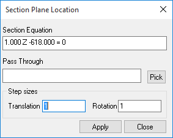
The various fields seen in the Section plane location panel are explained below
| Section Equation | Displays the current section plane equation. Users can edit the equation and apply. |
| Pass Through | Allows users to provide point coordinates through which the plane passes through. Users can either pick a vertex in the model or specify it in the text box. (coordinates separated by comma). This point coordinates will be cleared when the user modifies the equation. |
| Pick | Allows users to set mouse mode to pick a vertex in the model. |
| Translation step size | By default it is 1 and means the slider has 100 tick marks. If the step size is 2 , then the slider will have 50 tick marks. Users can change between 0 to 100. |
| Rotation step size | By default it is 1 and it means one degree. Users can change between 0 to 180. |
| Apply | Applies the step sizes to the controls. |
Steps to view the cut section
- Load any CAX model in VCollab Presenter.
- Click Cut Section in the context menu to open the Section Manager dialog
- Click XY, YZ, XZ options to view section planes parallel to coordinate planes and passing through the model center.
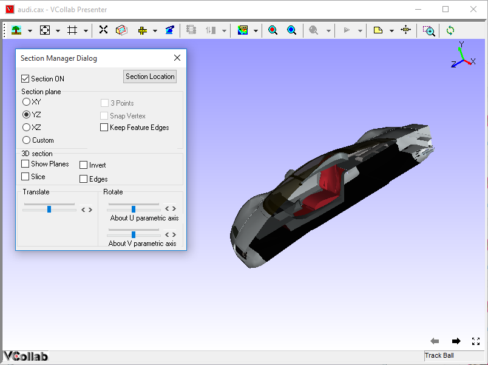
- Model is clipped with respect to the section plane defined.
- Click Show Planes to view a semi transparent section plane.
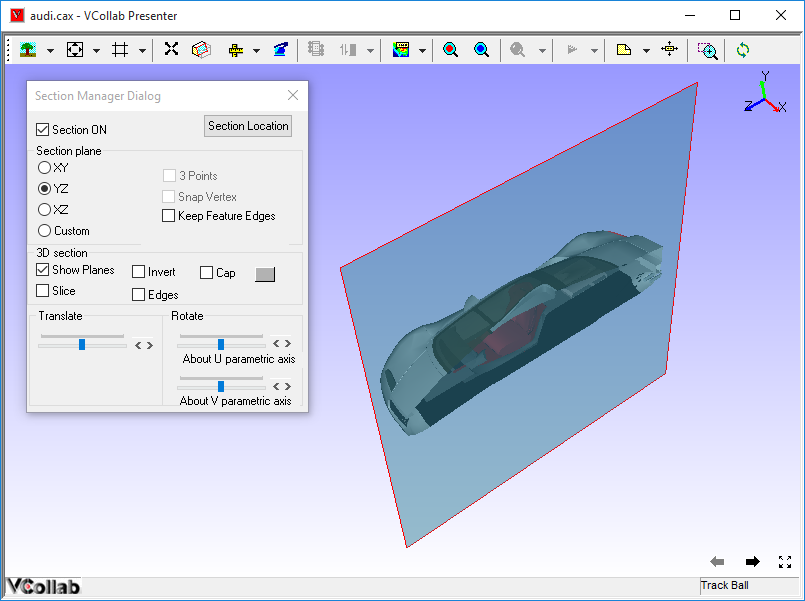
- Click Invert to invert clipping side.
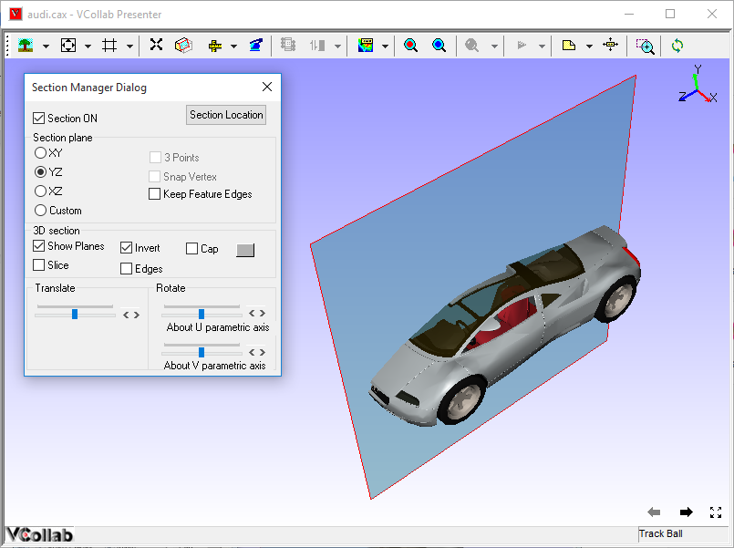
- Click Edges to view the intersection on model to the plane.
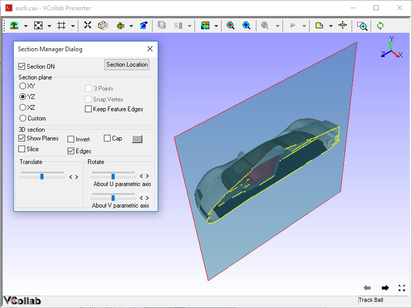
- Use Translation slider control or scroll button near the slider control to translate section plane in normal direction.
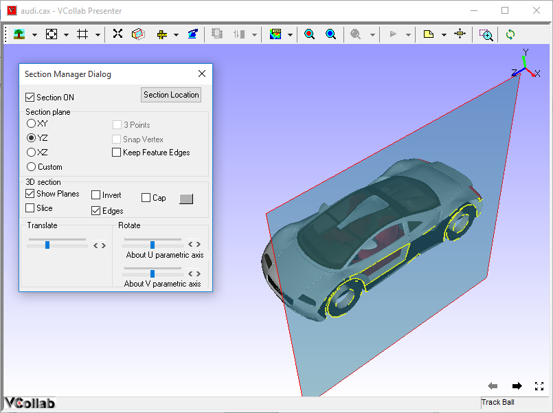
- Use Rotation slider controls or scroll buttons near slider controls to rotate section planes in either U or V Parametric Axes of the plane.
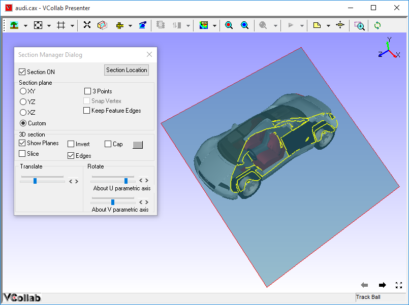
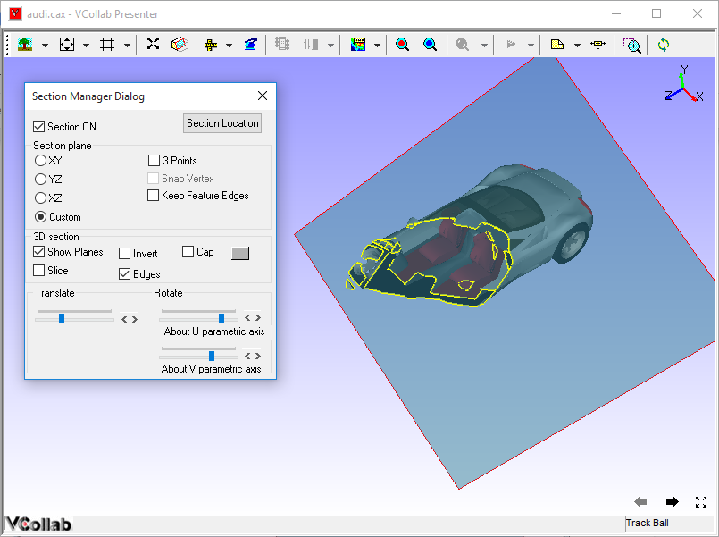
- Click Slice to add one more cut section plane in the opposite clipping direction.
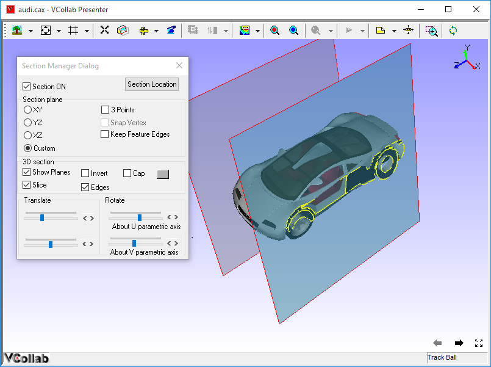
- Click Custom to create a user defined section plane.
Steps to set user defined section plane
- Click Custom in the Section Manager dialog.
- Click the 3 Points option which is now enabled.
- Click any three points on the model.
- Section plane, passing through the points selected, is thus defined.
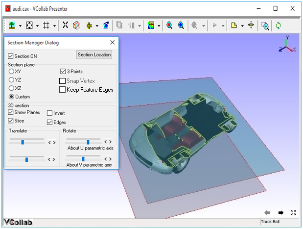
- Use Snap Vertex to select the nearest vertices of the model.
Steps to get and edit section plane data
- Click Section Plane location in the Section Manager dialog to openSection Plane Location dialog.
- It displays the current primary section plane equation in the form of aX+bY+cZ+d=0. where (a,b,c) is unit normal of the plane and d refers to the perpendicular distance of the plane from origin.
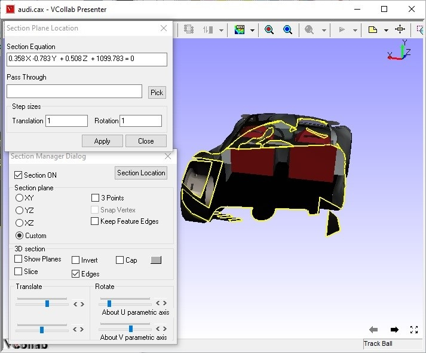
- Users can enter any point coordinates or pick a vertex using the Pick button to move the plane to a particular point.
Steps to set unit increment for the slider controls
- Click Section Plane Location in the Section Manager dialog to open the Section Plane Location dialog.
- Change Translation and Rotation step sizes provided.
- Click Apply to set values and reset the slider positions.
- By default, the translation slider is split into 100 ticks.
- Users can change the translation step size from 1 to 100.
- By default, rotation sliders are split into 180 ticks, which means each tick refers to one degree.
- Users can change the rotation step size from 1 to 180.
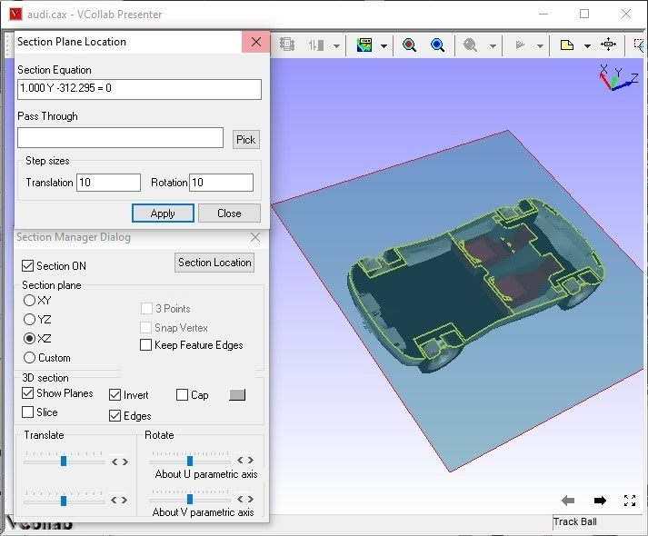
- Notice the changes made to the number of tick marks and position of sliders.
Section Cap
The Section Cap option helps to fill the hollow closed region to appear as solid. Closed parts option makes this cap work only for solid parts, not for shell models.
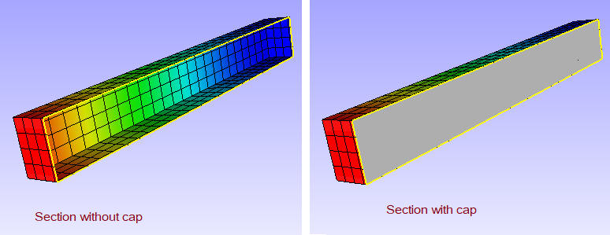